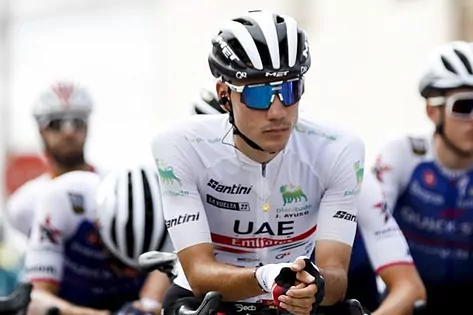
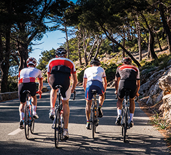
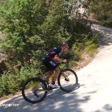

El joven y talentoso corredor, tras superar una extra ntilde;a tendinitis, debutará el próximo 25 de abril en la ronda suiza. No compite desde la última Vuelta a España.
El famoso tuit de la DGT, bajo el hashtag #TestDGT, ha suscitado críticas de la comunidad por utilizar una pregunta tipo test para preguntar si es necesario tener precaución al adelantar a un grupo de ciclistas en largas distancias cuesta arriba.
La Malga Palazzo-Scanuppia, en Italia, es la ascensión más dura del mundo con rampas de hasta el 45%. Así lo ha vivido un exciclista profesional.
